Redesigning how money moves through a poker app
Mega Poker brought me in to rework the flows where money enters, plays, and leaves their real-money poker app: add cash, the tournament tab, wallet self-transfer, and a withdrawal flow of more than 50 screens, in about two months, solo.
Outcome data: Mega Poker owned its analytics, and the company later shut its operations after India banned real-money online poker, so there is no live product to point at. I won’t publish numbers I can’t verify; Chapter 06 covers what I would have measured.
Mega Poker was a real-money gaming startup: players buy in with rupees, play poker on the mobile app, and withdraw what they win. Money on the platform lives in a three-part wallet, a deposit balance, a winnings balance, and a bonus balance, and the business depends on that money circulating rather than leaving.
The CEO came to me with a leak. Players were withdrawing a large share of the money in their wallets, and the business wanted more of it to stay in play. Around that core problem sat a set of surfaces that needed redesigning anyway: an add-cash flow gaining a complex bonus system, an outdated tournament tab, and a primitive withdrawal flow. I owned the end-to-end designs, working with one product manager and weekly reviews with the CEO.
The brief & the constraints
“Keep money in play” can be read two ways. The dark-pattern reading is friction: bury the withdraw button, add steps, hope players give up. The brief I took was the other reading: make staying genuinely worth more than leaving, and show the math whole. Every nudge in this case study is a real offer with its arithmetic on screen, and every exit stays one tap away. That principle, plus four harder constraints, shaped the work:
- C-01A behaviour brief, not a beauty brief. The measure of success was where the money went: winnings transferred back into play instead of straight out of the app.
- C-02Two visual languages, on purpose. The app was mid-migration from an old style to a new, locked one. Some flows were briefed in the new language and some had to stay in the old, so the system had to hold across both.
- C-03Government math inside the UI. GST is deducted on every deposit and TDS on withdrawals. The flows had to explain deductions and the bonuses that compensate for them without reading like fine print.
- C-04Untouchable neighbours. The tournament tab had to be rebuilt completely without touching the other elements on the page, including the header with the add-cash chip.
- C-05A team of three. Me, one product manager, and the CEO reviewing weekly. No other designers.
Money in: add cash without the fine print
Every deposit loses a chunk to GST before a single hand is dealt, and Mega Poker compensated with cashback plus a locked-bonus system tied to offers. That is three kinds of money moving in one transaction. The redesign treats the flow as a ledger: at every step, what you pay and what you receive are stated as arithmetic, never as an asterisk.
When the government takes a cut of every deposit, the interface either shows the math or loses the trust.
Step 01
Anchor on the deal, not the amount
The preset chips lead with the payoff: pay 500, get 750. The GST cashback is confirmed in plain words right under the selection, and the pay button repeats the exact charge, so the number on the card and the number on the button never disagree.
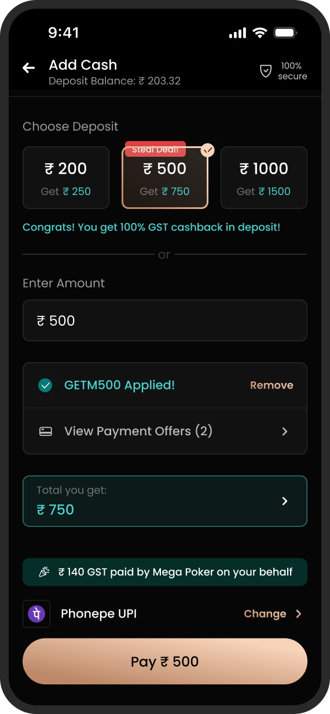
Step 02
Locked offers say how to unlock them
The same offer card carries an active and an inactive state. Instead of greying out and going silent, the locked state names its condition: deposit a minimum of 500 to activate. An offer you can’t use yet is still information.
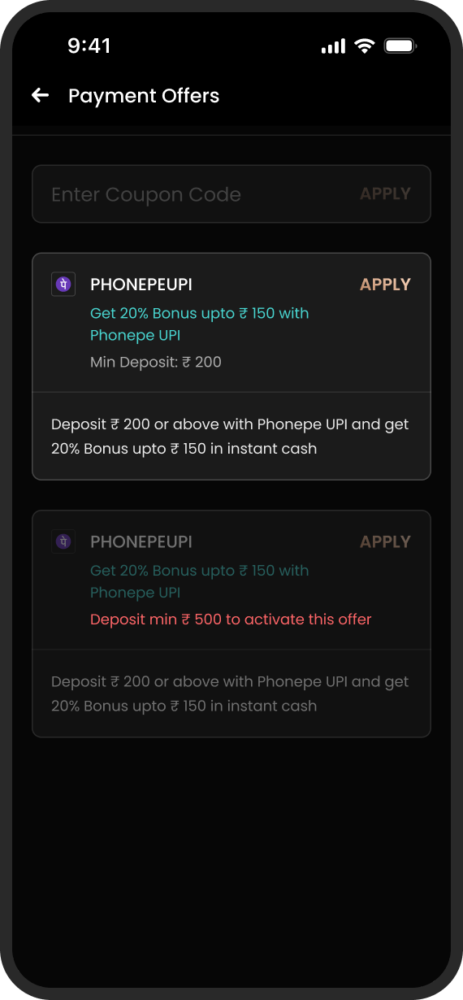
Step 03
A signed ledger before payment
The deposit summary itemises every line with its sign: GST out, cashback in, bonus into the locked-bonus wallet, and a single bold answer to the only question that matters: you receive this much. Nothing lands in the wallet that wasn’t announced here.
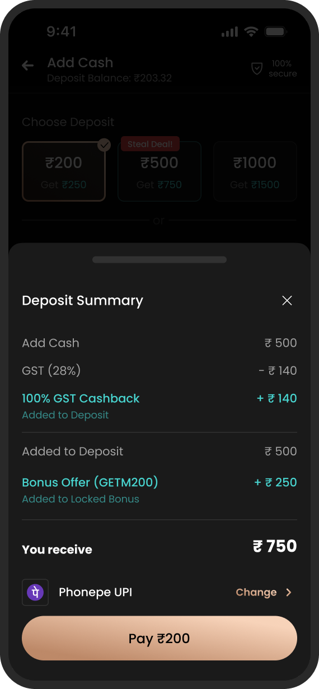
The tournament tab, rebuilt in place
Tournaments are where deposited money goes to play, and this was the one flow with a true before. The old tab was visibly dated, and it withheld the details a player needs to decide. The constraint made it harder: redesign the list completely, but leave the rest of the page, including the header with the add-cash chip, exactly as it was.
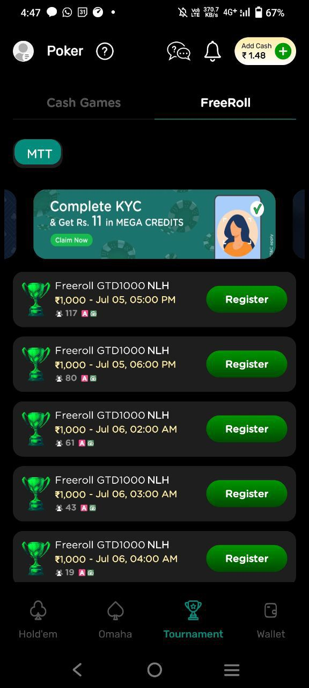
- F-01Every card looked identical. Same name, same trophy art, row after row. Nothing helped a player tell one tournament from the next.
- F-02The price was hidden. The button just said Register. You learned what it cost after committing to the tap.
- F-03No sense of state. Nothing signalled live, late registration, or how close a table was to filling up.
- F-04One lonely filter. A single MTT chip stood in for filtering and sorting an entire lobby.
A tournament card is a purchase decision, so the redesign treats it like one: prize, format, odds, and price, all before the tap.
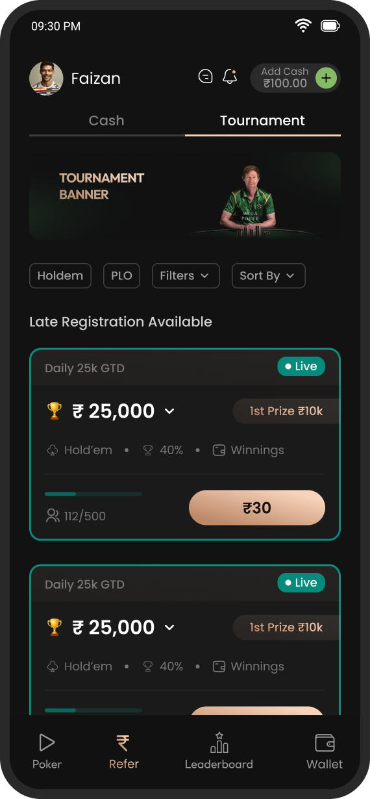
Two sheets carry the rest of the lobby’s workload: one for narrowing the list, one for everything a player wants to know about a tournament after it ends.
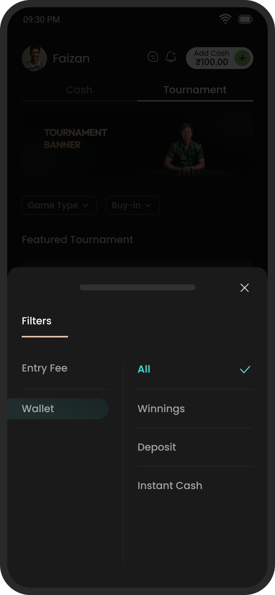
Fig. 06Filters as a two-axis sheet. Entry fee on one side, wallet type on the other, so “cheap tournaments I can pay for with winnings” is two taps.
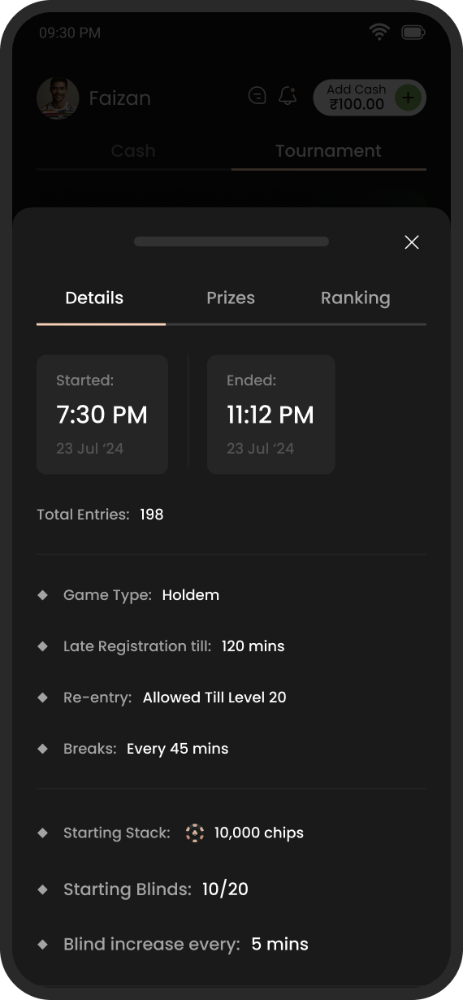
Fig. 07The post-game record. Start and end times, total entries, blinds, and re-entry rules in one sheet, with prizes and rankings a tab away.
The winnings moment
This chapter is the heart of the brief. The winnings balance is the leak: it is the one pot of money a player can withdraw, and most of it was leaving. The counter-move was a self-transfer offer: move winnings back to the deposit wallet and earn a bonus on top. The design question was not the offer itself but the moment. When is a player actually receptive to it?
The answer: the moment they stand up from a table in profit.
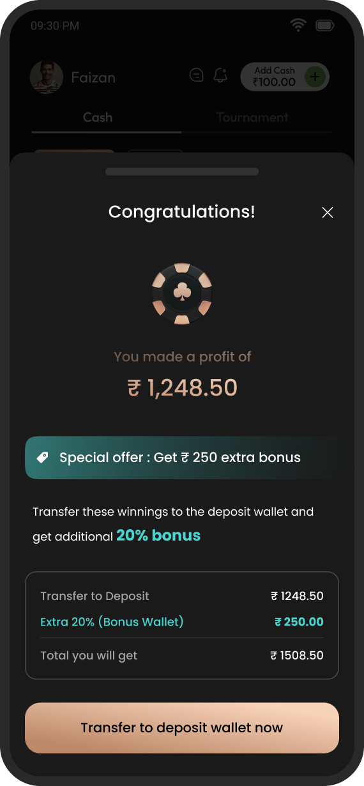
The right moment to ask a player to keep money in play is the moment they have just won some.
The same offer then lives on in two quieter places, so a player who dismissed the sheet can still find it when they are ready.
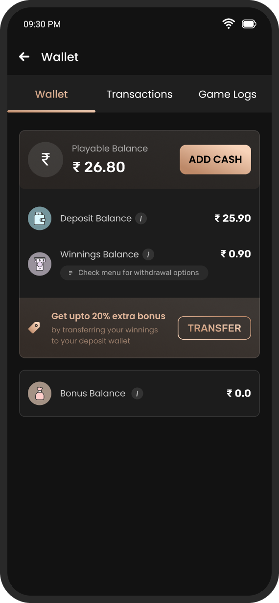
Fig. 09The wallet keeps the offer warm. A banner sits directly beneath the winnings balance with transfer as a quiet secondary action.
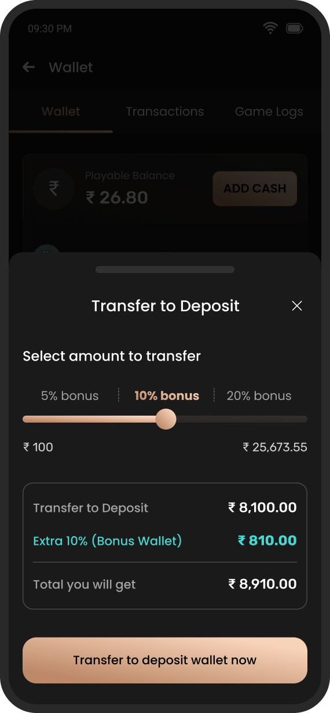
Fig. 10A slider with tiered stakes. 5, 10, or 20% bonus depending on how much you move, with the payoff recalculated live below the handle.
Money out: the honest exit
Withdrawal is the flow a real-money app is judged by, and Mega Poker’s was primitive. The old withdrawal screen was also the only white screen in the whole app, sticking out like a sore thumb. I redesigned the flow end to end, more than 50 screens in all, covering amounts, limits, payout options, and the states between a request and a bank account.
A note on the two visual styles: Mega Poker was migrating from an old visual language to a new, locked one, flow by flow. Some flows were briefed in the new style and some in the old, which is why this chapter’s teal accents differ from the copper elsewhere. The discrepancy is the migration, not drift. All of it was intentional.
If a player decides to leave with their money, the flow’s job is to state the fee honestly and make the exit fast.
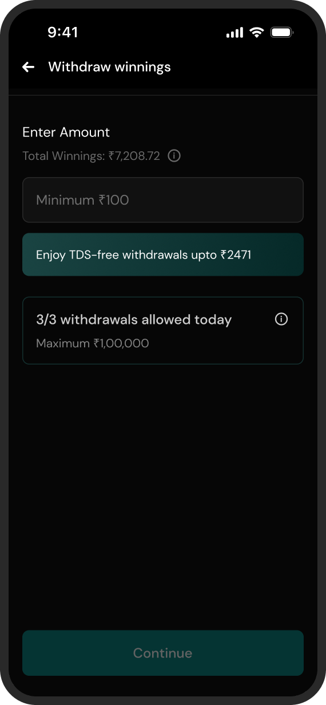
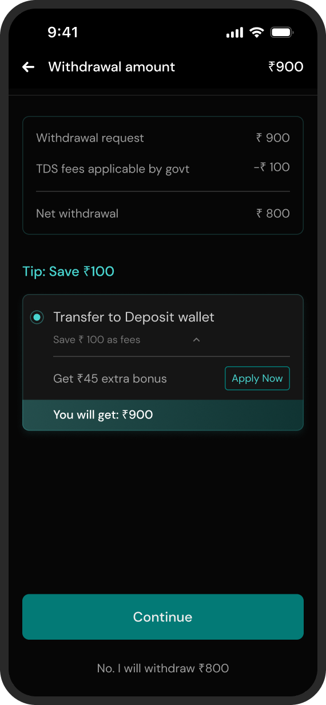
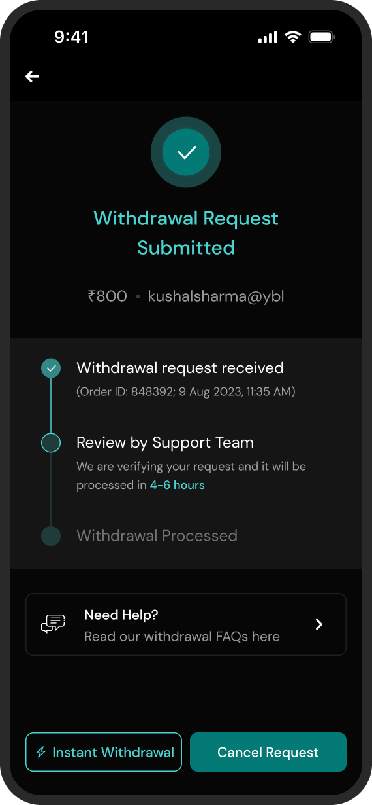
An honest scorecard
This was an execution engagement: the client owned the analytics, and the product itself is gone now, so no after-the-fact numbers are ever coming. Rather than decorate the ending, here is what shipped, what I would have measured, and what I’d do differently.
Shipped
- 4 flows redesigned: add cash, tournaments, self-transfer, withdrawal
- 50+ screens for the withdrawal flow alone
- Offer, locked-bonus, and GST-cashback math made legible across the deposit surfaces
- Tournament tab rebuilt without touching its neighbours
- ~2 months, sole designer, across two visual languages
What I’d measure
- Share of winnings transferred to deposit vs. withdrawn, before and after
- Acceptance rate of the leave-table offer, and of the withdrawal counter-offer
- Add-cash completion, and drop-off at the deposit summary
- Tournament registrations per session from the new cards
- Repeat deposits within 30 days of a self-transfer
What I’d do differently
- A/B test the leave-table intercept before full rollout, not after
- Copy-test the bonus math with real players: the arithmetic only works if it is trusted
- Design the failed and pending payment states as thoroughly as the happy path
- Push harder on responsible-play guardrails to sit alongside the retention nudges
A postscript: Mega Poker shut its operations after India banned real-money online poker. The flows in this study outlived their product only as design work, which is one more reason this scorecard sticks to what I can count.
Fin.